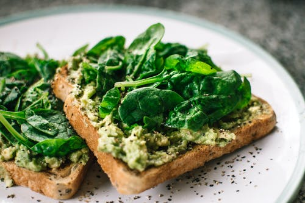
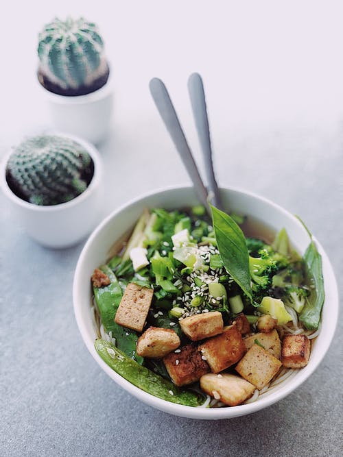

Inicio

Recetas Con Pasta

|
Inicio |
|
Recetas Con Pasta |
|
 | Recetas Con Verduras |
 |
Recetas Con Pasta Sencillas, fáciles y DeliciosasHay días en los que no nos apetece complicarnos nada en la cocina ni tenemos los alimentos necesarios, necesitamos un plato sencillo y con pocos ingredientes pero además muy rico y que llene, una solución facil y sencilla es la pasta. Simplemente es pasta cocida y con un poco de aceite, queso y pimienta recien molida ya está buenísima, pero si además te animas a elaborar una salsa casera facil y sencilla, el resultado va a ser de 10.
Macarrones con tomateEstos macarrones con tomate casero son una receta sabrosa y a la vez muy sencilla, además nos haremos una salsita muy rica. El toque especial lo pone el orégano y como ingrediente opcional tenemos el chorizo que incrementa la potencia de sabor del plato. Si te encanta la pasta vas a disfrutar con esta sección que se encuentraan clásicos como los macarrones con chorizo y tomate para triunfar que vamos a preparar, otras futuras recetas serán los spaguetti a la boloñesa o los rigatoni con salsa boloñesa, además de otra rica y sencilla receta como puede ser una pizza de lo que queramos la cual voy a subir. Ingredientes De Nuestros Macarrones Con Tomate Casero
Preparación de los macarrones
Ahora ya puedes disfrutar de tu facil y rico plato de macarrones para disfrutar tanto solo como en familia Pizza MargaritaCómo preparar una pizza Margarita, la madre de todas las pizzas, la pizza de entre todas las pizzas, tenemos que hablar de pizza Margarita. Este tipo de pizza italiana esta formada por una masa de pizza napolitana como base y acompañada por unos pocos ingredientes. Tan sencillo como un poco de tomate, queso mozzarella, albahaca fresca, sal, pimienta negra recién molida y aceite de oliva virgen extra. Ingredientes De Nuestra Pizza
Preparación de la pizza
Este es el resultado de tu increible pizza |